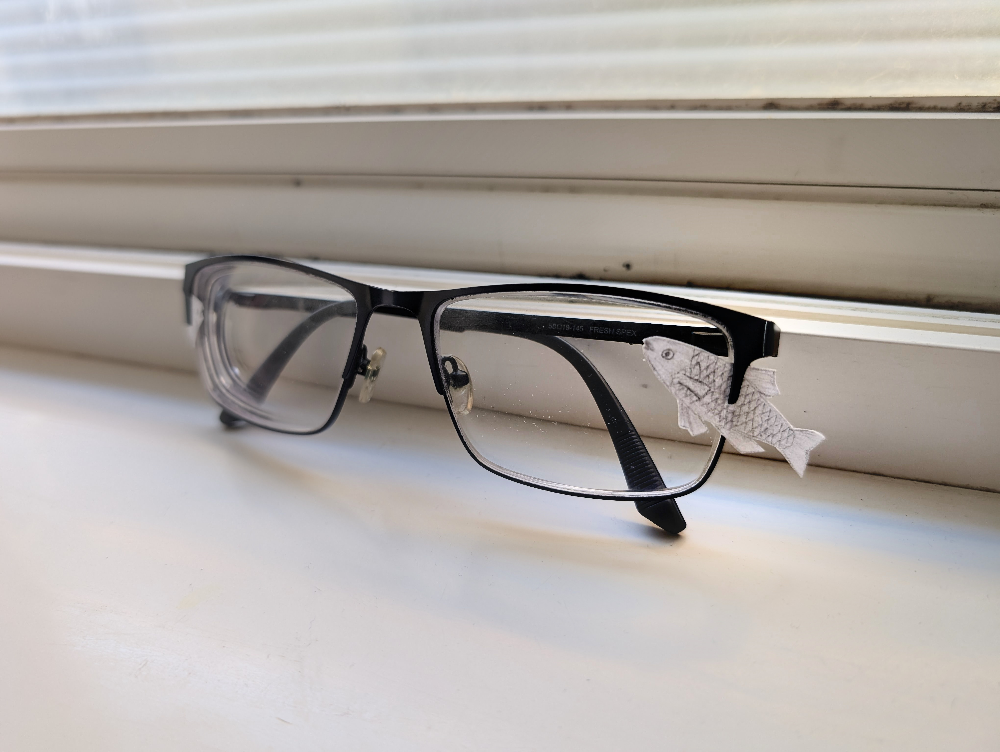

Articles

Glasses Decorations
Charles Ai | June 6, 2025 21:12 MDT
A lot of people, myself included, wear glasses, either as a prescription, for reading, or simply because why not. However, something your pair of glasses may be missing is customization. Sure, frames come in several colours, or have neat shapes, but other than that, not much. And that's why I suggest that decorations on the frame, serving both visual and utility functions, should be more widespread.
Aside from adding something to one's face, glasses are in my opinion, visually boring. Only a frame and two legs, they are quite simple, which could look well if you'd want a minimalistic appearance. But what about something more complex? In this scenario, we could add something to make glasses more unique and expressive.
Certain glasses frames, such as the one pictured above, have small clips on the sides, which you stick a small piece of paper in, like a little sticker. Or you could simply attach some small objects to the frame. A couple of years ago, I even made a rear-view mirror, which was attached to the lens, which obstructed my vision partially, but provided a view of my posterior. You could also make a clip to have something stick out of the glasses.
However, adding decorations to glasses be slightly detrimental to your field of view. As mentioned earlier, they could paritially block vision if they are in front of the lens. Not only that, but wearing them could get one mocked or harassed for their strange appearance (though I think that should change). So if you follow the suggestions of the previous paragraph and encounter any problems, don't blame me.
In conclusion, adding some creative elements to your glasses is a way to change their appearance. Though they may block sight and be made fun of by others, these decorations can add some much-needed expressiveness to your eyewear.